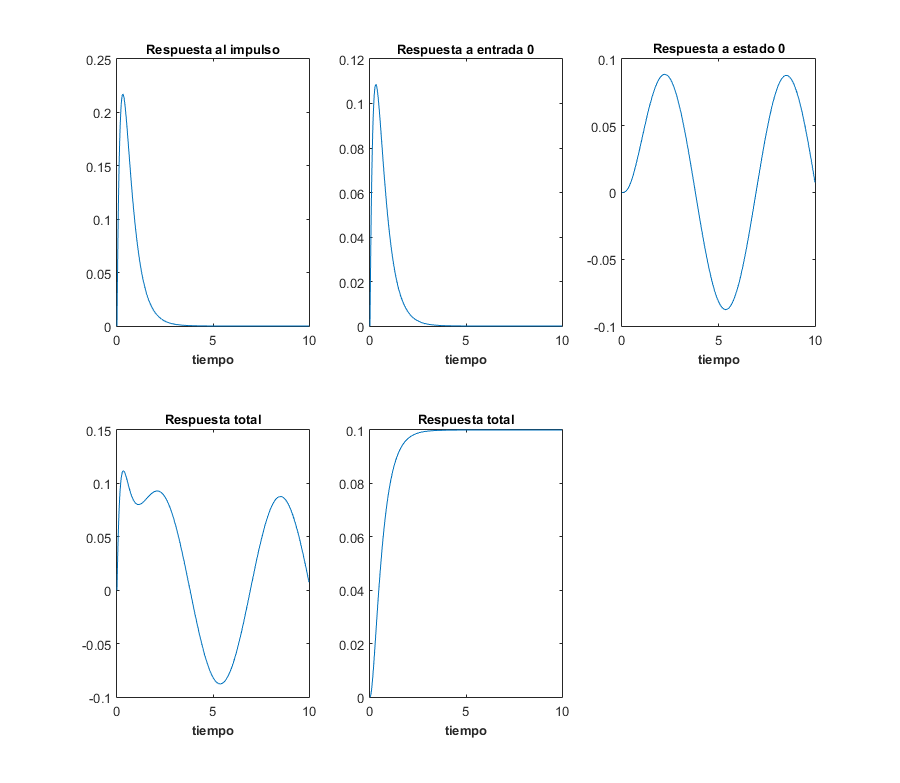
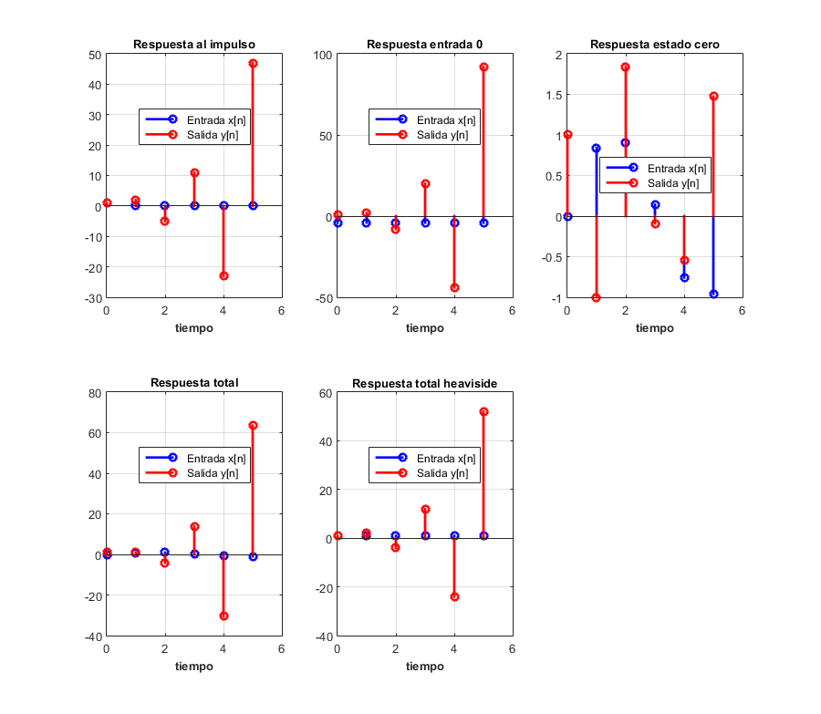

Contents
Práctica 6: Sistemas diferenciales y en diferencias
%%Instituto Politecnico Nacional %%Upiita %%Analisis de Señales y sistemas %%2MV1 % * Guerrero Aguilar Luis Abraham % * Durán Espino Rodrigo Baltazar % * López Casas Leonel Isaac % * Tuda Alonzo Roberto Samuel
Nota
Se tiene que MATLAB presenta una definición del escalón unitario heaviside(t), donde heaviside(0)=0.5, para versiones mayores o iguales a 2016 esto puede configurarse al valor que se quiera, en nuestro caso queremos heaviside(0)=1, esto se logra ejecutando la siguiente instrucción
sympref('HeavisideAtOrigin', 1);
de no ser posible establecer la configuración se tiene que tener en cuenta la definición de MATLAB.
Sistemas diferenciales (Transformada de Fourier)
Se utiliza el toolbox con herramientas de matemáticas símbolicas, para generar un programa que resuelve sistemas diferenciales de orden n mediante transformada de Fourier, el programa despliega: paso por paso la metodología de solución, la solución de la ecuación diferencial, y la gráfica tanto de la señal de entrada como de la señal de salida.
Entregables sistemas diferenciales
Para sistemas diferenciales realiza un programa con las siguientes características
- Muestra la función de transferencia del sistema
- Muestra la respuesta al impulso (simbólico, gráfica)
- Muestra la respuesta a entrada cero (simbólico, gráfica)
- Muestra la respuesta a estado cero (simbólico, gráfica)
- Muestra la respuesta total (simbólico, gráfica)
- La respuesta total al escalón con condiciones iniciales 0 (simbólico, gráfica)
- Usando subplot, depliega una figura con 5 gráficas
Observa que los entregables pueden resolverse (solvo la función de transferencia) con llamadas a la funciones presentadas en esta publicación
Nota: Ejecuta los ejemplos descritos dentro de los comentarios de cada código para que observes el uso de estos
Entregables sistemas en diferencias
Para sistemas diferenciales realiza un programa con las siguientes características
- Muestra la función de transferencia del sistema
- Muestra la respuesta al impulso (simbólico, gráfica, ver KroneckerDelta)
- Muestra la respuesta a entrada cero (simbólico, gráfica)
- Muestra la respuesta a estado cero (simbólico, gráfica)
- Muestra la respuesta total (simbólico, gráfica)
- La respuesta total al escalón con condiciones iniciales 0 (simbólico, gráfica)
- Usando subplot, depliega una figura con 5 gráficas
Observa que los entregables pueden resolverse (solvo la función de transferencia) con llamadas a la funciones presentadas en esta publicación
Practica 6. Señales continuas
%%$${y(t)}\ddot+7{y(t)}\dot+10y(t)=sin(t), y(0)=0, y'(0)=1$$ sympref('HeavisideAtOrigin', 1); syms t; disp('Señales continuas') figure (1) hFig = figure(1); set(hFig, 'Position', [0 0 900 900]) axes1 = axes('Parent',hFig,'FontWeight','bold','FontSize',16); subplot(2,3,1); laplace2016a([10 7 1],[1],[0,1],dirac(t),10,'Respuesta al impulso') xlabel('tiempo','FontWeight','bold','FontSize',10) title('Respuesta al impulso','FontWeight','bold','FontSize',10) subplot(2,3,2); laplace2016b([10 7 1],[1],[0,1],0,10,'Respuesta a entrada 0') xlabel('tiempo','FontWeight','bold','FontSize',10) title('Respuesta a entrada 0','FontWeight','bold','FontSize',10) subplot(2,3,3); laplace2016a([10 7 1],[1],[0,0],sin(t),10,'Respuesta a estado 0') xlabel('tiempo','FontWeight','bold','FontSize',10) title('Respuesta a estado 0','FontWeight','bold','FontSize',10) subplot(2,3,4); laplace2016a([10 7 1],[1],[0,1],sin(t),10,'Respuesta total') xlabel('tiempo','FontWeight','bold','FontSize',10) title('Respuesta total','FontWeight','bold','FontSize',10) subplot(2,3,5); laplace2016a([10 7 1],[1],[0,0],heaviside(t),10,'Respuesta total') xlabel('tiempo','FontWeight','bold','FontSize',10) title('Respuesta total','FontWeight','bold','FontSize',10)
Señales continuas
Respuesta al impulso
y(t)=
exp(-2 t) 2 exp(-5 t) 2
----------- - -----------
3 3
Respuesta a entrada 0
y(t)=
exp(-2 t) exp(-5 t)
--------- - ---------
3 3
Respuesta a estado 0
y(t)=
exp(-2 t) exp(-5 t) 7 cos(t) 9 sin(t)
--------- - --------- - -------- + --------
15 78 130 130
Respuesta total
y(t)=
exp(-2 t) 2 exp(-5 t) 9 7 cos(t) 9 sin(t)
----------- - ----------- - -------- + --------
5 26 130 130
Respuesta total
y(t)=
exp(-5 t) exp(-2 t) 1
--------- - --------- + --
15 6 10
 Practica 6. Señales discretas
%%$$y[n+2]+3y[n+1]+2y[n]=f[n+1]+3f[n] y[0]=1 y[1]=2 f[n]=sin[n] f[0]=1$$ syms n; figure (2) hFig = figure(2); set(hFig, 'Position', [0 0 900 900]) axes1 = axes('Parent',hFig,'FontWeight','bold','FontSize',16); subplot(2,3,1); zeta2016a([1 3 2],[1 3],[2 1],[1],kroneckerDelta(n),5,'Respuesta al impulso') xlabel('tiempo','FontWeight','bold','FontSize',10) title('Respuesta al impulso','FontWeight','bold','FontSize',10) subplot(2,3,2); zeta2016b([1 3 2],[1 3],[2 1],[1],-4,5,'Respuesta entrada 0') xlabel('tiempo','FontWeight','bold','FontSize',10) title('Respuesta entrada 0','FontWeight','bold','FontSize',10) subplot(2,3,3); zeta2016a([1 3 2],[1 3],[0 1],[1],sin(n),5,'Respuesta estado cero') xlabel('tiempo','FontWeight','bold','FontSize',10) title('Respuesta estado cero','FontWeight','bold','FontSize',10) subplot(2,3,4); zeta2016a([1 3 2],[1 3],[2 1],[1],sin(n),5,'Respuesta total') xlabel('tiempo','FontWeight','bold','FontSize',10) title('Respuesta total','FontWeight','bold','FontSize',10) subplot(2,3,5); zeta2016a([1 3 2],[1 3],[2 1],[1],heaviside(n),5,'Respuesta total heaviside') xlabel('tiempo','FontWeight','bold','FontSize',10) title('Respuesta total heaviside','FontWeight','bold','FontSize',10)
Respuesta al impulso
y(n)=
n
n 3 (-2) 3 kroneckerDelta(n, 0)
(-1) - ------- + ----------------------
2 2
Respuesta entrada 0
y(n)=
n n
4 (-1) - 3 (-2)
Respuesta estado cero
y(n)=
/ n \
| (-2) kroneckerDelta(n, 0) |
sin(1) | ----- - -------------------- | 2
\ 2 2 /
kroneckerDelta(n, 0) - -----------------------------------------
#1
n
((-1) - kroneckerDelta(n, 0)) (cos(1) + sin(1) + 1)
+ ----------------------------------------------------
cos(1) + 1
+
cos(n) (3 sin(1) + #4) cos(n) #2 sin(n) #2
#3 kroneckerDelta(n, 0) + ---------------------- - --------- + ---------
cos(1) cos(1) sin(1)
------------------------------------------------------------------------
#1 (cos(1) + 1)
where
#1 == 4 cos(1) + 5
#2 == 3 sin(1) + cos(1) #3 + #4
#3 == 4 sin(1) + 3 cos(1) sin(1)
#4 == 2 cos(1) sin(1)
Respuesta total
y(n)=
kroneckerDelta(n,
n
((-1) - kroneckerDelta(n, 0)) (3 cos(1) + sin(1) + 3)
0) + ------------------------------------------------------
cos(1) + 1
+
cos(n) (3 sin(1) + #4) cos(n) #2 sin(n) #2
#3 kroneckerDelta(n, 0) + ---------------------- - --------- + ---------
cos(1) cos(1) sin(1)
------------------------------------------------------------------------
#1 (cos(1) + 1)
/ n \
| (-2) kroneckerDelta(n, 0) |
| ----- - -------------------- | (16 cos(1) + 2 sin(1) + 20)
\ 2 2 /
- ------------------------------------------------------------
#1
where
#1 == 4 cos(1) + 5
#2 == 3 sin(1) + cos(1) #3 + #4
#3 == 4 sin(1) + 3 cos(1) sin(1)
#4 == 2 cos(1) sin(1)
Respuesta total heaviside
y(n)=
n
n 5 (-2) 2
2 (-1) - ------- + -
3 3
